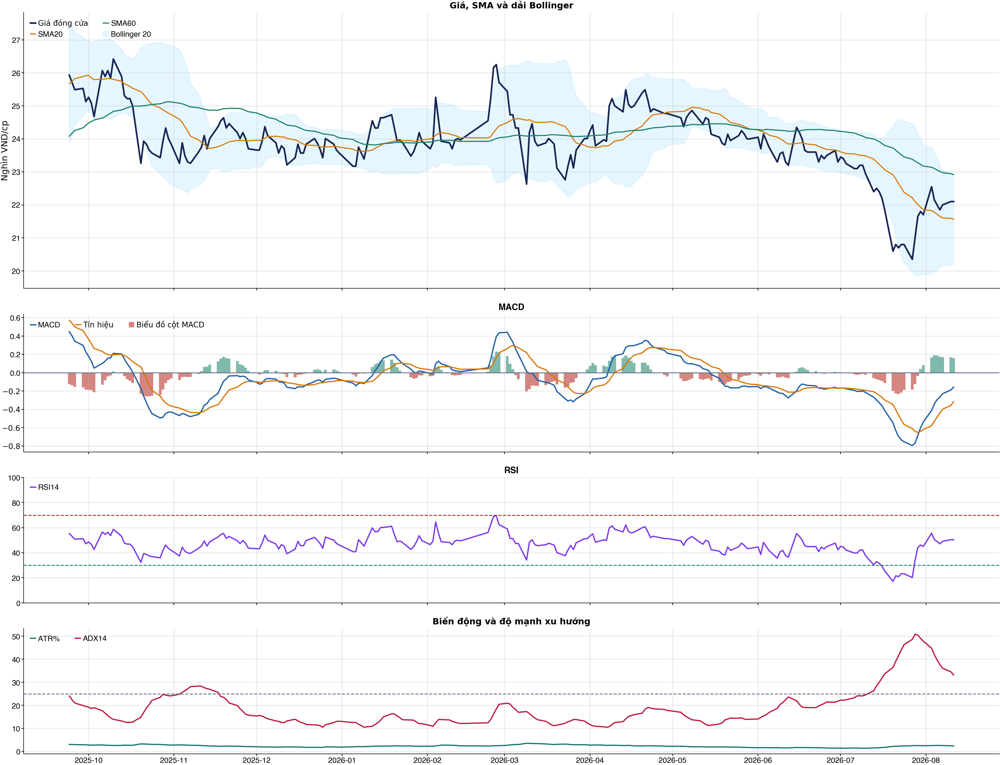
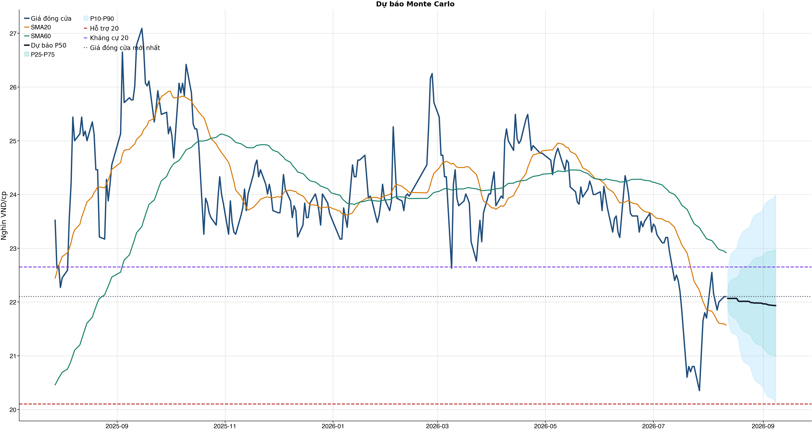
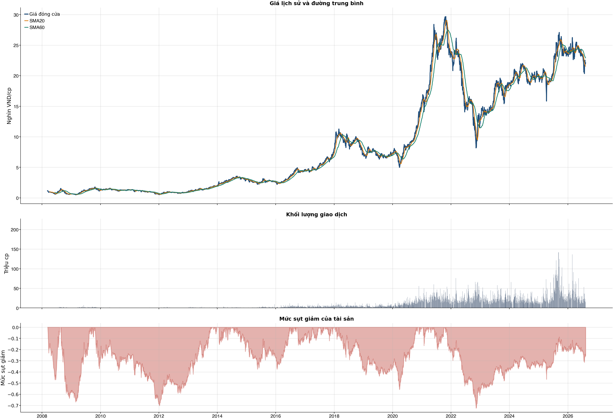

Kết quả chính
Tổng quan cơ bản
Biểu đồ kỹ thuật

Tín hiệu kỹ thuật
| Xu hướng | Cẩn thận | Giá nằm dưới SMA60. |
| MACD | Tích cực | MACD trên signal, histogram dương. |
| RSI14 | Trung tính | RSI 50.4. |
| Bollinger | Ổn định | Giá nằm trong dải Bollinger. |
| ADX | Xu hướng giảm | ADX 33.2, -DI vượt +DI. |
| Thanh khoản | Thấp | 0.26 lần trung bình. |
| Stochastic | Hồi phục | %K nằm trên %D. |
So sánh mô hình
| XGBoost | 0.520 | AUC 0.587 |
| Logistic | 0.515 | AUC 0.565 |
| Đa số | 0.500 | Mốc so sánh |
Kiểm thử chiến lược ngoài mẫu sau chi phí
| Lợi nhuận ròng | -29.9% | 737 quan sát ngoài mẫu |
| Sharpe | -1.41 | Sau chi phí |
| Mức sụt giảm tối đa | -37.0% | 63 vòng giao dịch |
| Chi phí giả định | 50.0 bps | Một vòng mua và bán |
Mức độ quan trọng của đặc trưng
| adx_14 | 10.64 | Mức đóng góp |
| market_return_1d | 9.91 | Mức đóng góp |
| bb_position_20 | 9.56 | Mức đóng góp |
| macd_pct | 8.96 | Mức đóng góp |
| relative_strength_20d | 8.95 | Mức đóng góp |
| macd_hist_pct | 8.94 | Mức đóng góp |
| return_10d | 8.81 | Mức đóng góp |
| return_1d | 8.79 | Mức đóng góp |
Điều kiện phát hành tín hiệu
| AUC của mô hình | ĐẠT | Điều kiện phát hành tín hiệu |
| Độ chính xác cân bằng của mô hình | KHÔNG ĐẠT | Điều kiện phát hành tín hiệu |
| XGBoost vượt mô hình Logistic đối chứng | ĐẠT | Điều kiện phát hành tín hiệu |
| Xác suất tăng đạt ngưỡng | KHÔNG ĐẠT | Điều kiện phát hành tín hiệu |
| Bối cảnh kỹ thuật đạt ngưỡng | KHÔNG ĐẠT | Điều kiện phát hành tín hiệu |
| Tỷ lệ lợi nhuận/rủi ro đạt ngưỡng | ĐẠT | Điều kiện phát hành tín hiệu |
| Dữ liệu còn mới | ĐẠT | Điều kiện phát hành tín hiệu |
| Có khối lượng vị thế hợp lệ | ĐẠT | Điều kiện phát hành tín hiệu |
| Có kết quả kiểm thử chiến lược ngoài mẫu | ĐẠT | Điều kiện phát hành tín hiệu |
| Mẫu kiểm thử chiến lược đủ lớn | ĐẠT | Điều kiện phát hành tín hiệu |
| Kiểm thử chiến lược có lợi thế ròng | KHÔNG ĐẠT | Điều kiện phát hành tín hiệu |
Quản trị rủi ro
| Rủi ro/lệnh | 1.0% | 1,000,000 VND |
| Mức dừng lỗ | 21.31 | Rủi ro mỗi cổ phiếu 0.90 |
| Mục tiêu 1 | 23.99 | Lợi nhuận/rủi ro 1.98 |
| Mục tiêu 2 | 23.99 | Dự báo/kháng cự |
Phân tích cơ bản
| P/E | 8.04 | 2026-Q2 |
| P/B | 1.32 | 2026-Q2 |
| P/S | 0.98 | 2026-Q2 |
| ROE | 17.4% | 2026-Q2 |
| ROA | 8.9% | 2026-Q2 |
| Gross margin | 16.4% | 2026-Q2 |
| Net margin | 12.3% | 2026-Q2 |
| Debt/Equity | 0.97 | 2026-Q2 |
| Current ratio | 1.14 | 2026-Q2 |
| NPL | 0.0% | 2026-Q2 |
| Dividend yield | 0.0% | 2026-Q2 |
| Market cap | 186,589.5 tỷ | 2026-Q2 |
| Revenue Growth | 53.6% | 2026-Q2 YoY |
| Profit Growth | 49.7% | 2026-Q2 YoY |
| Dòng tiền từ HĐKD | 5,253.7 tỷ | 2026-Q2 |
| CAPEX | -6,703.2 tỷ | 2026-Q2 |
| Lợi nhuận sau thuế | 6,424.5 tỷ | 2026-Q2 |
| Lợi nhuận hoạt động | 7,155.0 tỷ | 2026-Q2 |
| Chi phí lãi vay | -1,519.6 tỷ | 2026-Q2 |
| Tiền và tương đương tiền | 9,782.1 tỷ | 2026-Q2 |
| Vay ngắn hạn | 71,433.4 tỷ | 2026-Q2 |
| Vay dài hạn | 27,096.6 tỷ | 2026-Q2 |
| Tổng tài sản | 278,929.8 tỷ | 2026-Q2 |
| Tổng nợ phải trả | 137,413.8 tỷ | 2026-Q2 |
| Vốn chủ sở hữu | 141,516.0 tỷ | 2026-Q2 |
| Khoản phải thu | 18,040.2 tỷ | 2026-Q2 |
| Hàng tồn kho | 55,607.9 tỷ | 2026-Q2 |
| Dòng tiền tự do (CFO - CAPEX) | -1,449.5 tỷ | 2026-Q2 |
| CFO / Lợi nhuận sau thuế | 0.82 | 2026-Q2 |
| Nợ vay ròng | 88,747.9 tỷ | 2026-Q2 |
| Nợ vay / Vốn chủ sở hữu | 0.70 | 2026-Q2 |
| Phải thu / Tổng tài sản | 6.5% | 2026-Q2 |
| Khả năng trả lãi (EBIT / lãi vay) | 4.71 | 2026-Q2 |
Tin tức doanh nghiệp
| Trạng thái | Có dữ liệu | research_only |
| Nguồn / số bài | VCI | 50 |
| Bài đủ timestamp | 50 | Chỉ các bài này mới được phép dùng point-in-time |
| Sentiment 5 ngày | 0.00 | 0.0 bài trước cutoff |
| Phương pháp | keyword_heuristic_v1 | Research only; chưa dùng làm tín hiệu mua/bán |
Dự báo ngắn hạn
| 2026-08-12 | 22.07 | P10 21.72 / P90 22.58 |
| 2026-08-13 | 22.07 | P10 21.53 / P90 22.79 |
| 2026-08-14 | 22.07 | P10 21.43 / P90 22.91 |
| 2026-08-17 | 22.07 | P10 21.38 / P90 22.99 |
| 2026-08-18 | 22.02 | P10 21.30 / P90 23.14 |
| 2026-08-19 | 22.01 | P10 21.08 / P90 23.22 |
| 2026-08-20 | 22.01 | P10 20.97 / P90 23.28 |
| 2026-08-21 | 22.01 | P10 20.88 / P90 23.33 |
Biểu đồ dự báo

Lịch sử giá và mức sụt giảm

Báo cáo dùng để học tập và lập kịch bản, không phải khuyến nghị mua/bán.
Phân tích AI có kiểm chứng
Trạng thái quyết định: NO_EDGE
Tóm tắt: ML decision hiện giữ nguyên NO_EDGE. News Reader đã trích đoạn có nguồn của 4 bài để phân loại chủ đề (ket_qua_kinh_doanh: 3, co_tuc_va_hanh_dong_doanh_nghiep: 3, vi_mo: 2, nganh: 3, rui_ro: 1), nhưng các trích đoạn này không tạo bằng chứng mới cho quyết định đầu tư.
Kỹ thuật: Artifact kỹ thuật: bias Trung tính; điểm -1. Chi tiết artifact: Xu hướng: Cẩn thận (Giá nằm dưới SMA60.); MACD: Tích cực (MACD trên signal, histogram dương.); RSI14: Trung tính (RSI 50.4.); Bollinger: Ổn định (Giá nằm trong dải Bollinger.); ADX: Xu hướng giảm (ADX 33.2, -DI vượt +DI.); Thanh khoản: Thấp (0.26 lần trung bình.); Stochastic: Hồi phục (%K nằm trên %D.)
Cơ bản: Artifact cơ bản: Hòa Phát; kỳ 2026-Q2; P/E 8.04; P/B 1.32; ROE 17.4%; ROA 8.9%; Debt/Equity 0.97; Revenue Growth 53.6%; Profit Growth 49.7%.
Tin tức: Đã đọc trích đoạn giới hạn của 4 bài; phân nhóm rule-based: ket_qua_kinh_doanh: 3, co_tuc_va_hanh_dong_doanh_nghiep: 3, vi_mo: 2, nganh: 3, rui_ro: 1. Tác động cần kiểm chứng: Đối chiếu doanh thu/lợi nhuận trong bài với BCTC và kỳ vọng thị trường. Kiểm tra ngày GDKHQ, tỷ lệ, nguồn chi trả và nguy cơ pha loãng trước khi đánh giá tác động. Đối chiếu thời điểm công bố và kênh tác động lãi suất/tỷ giá với mô hình kinh doanh. So sánh tín hiệu ngành với thị phần, nhu cầu và đối thủ trước khi suy luận cho riêng doanh nghiệp. Xác minh công bố chính thức, phạm vi ảnh hưởng và khả năng định lượng rủi ro. Đây không phải sentiment hay dự báo tác động giá.
Live research: Live snapshot lấy lúc 2026-08-11T05:02:00.631536+00:00; News Reader đọc được 4 bài. ML có 4 lý do guard và vẫn là NO_EDGE. Không dùng tin live để train/backtest.
Rủi ro cần kiểm chứng
- ML guard: Balanced accuracy 0.520 < 0.520
- ML guard: Probability 52.8% < 55.0%
- ML guard: Technical score -1 < 2
- ML guard: Lợi thế OOS ròng không đạt: return=-0.29859459999999893, Sharpe=-1.4140387494208335
- News Reader: Đối chiếu doanh thu/lợi nhuận trong bài với BCTC và kỳ vọng thị trường.
- News Reader: Kiểm tra ngày GDKHQ, tỷ lệ, nguồn chi trả và nguy cơ pha loãng trước khi đánh giá tác động.
- News Reader: Đối chiếu thời điểm công bố và kênh tác động lãi suất/tỷ giá với mô hình kinh doanh.
- News Reader: So sánh tín hiệu ngành với thị phần, nhu cầu và đối thủ trước khi suy luận cho riêng doanh nghiệp.
- News Reader: Xác minh công bố chính thức, phạm vi ảnh hưởng và khả năng định lượng rủi ro.
- Chỉ lưu trích đoạn giới hạn để kiểm chứng nguồn; không lưu hay hiển thị toàn văn bài báo.
- Phân nhóm là keyword rule-based để định tuyến research, không phải sentiment hay dự báo tác động giá.
- Dữ liệu News Reader chỉ phục vụ research/report; không dùng làm feature train/backtest khi chưa có lịch sử available_at point-in-time.
- Tin live/trích đoạn cần mở URL gốc để kiểm chứng bối cảnh, số liệu và thời điểm trước khi sử dụng.
Bằng chứng
- ML decision artifact: NO_EDGE. Balanced accuracy 0.520 < 0.520
- ML decision artifact: NO_EDGE. Probability 52.8% < 55.0%
- ML decision artifact: NO_EDGE. Technical score -1 < 2
- ML decision artifact: NO_EDGE. Lợi thế OOS ròng không đạt: return=-0.29859459999999893, Sharpe=-1.4140387494208335
- News Reader [nguoiquansat.vn]: Tiết lộ bất ngờ về lượng sở hữu cổ phiếu HPG của con gái tỷ phú Trần Đình Long - nguoiquansat.vn | nhóm: co_tuc_va_hanh_dong_doanh_nghiep (2026-08-07T04:27:01+00:00)
- News Reader [VOV.VN]: Một số cổ phiếu cần quan tâm 5/8: Cơ hội đầu tư tiềm năng với HPG và MBB - VOV.VN | nhóm: ket_qua_kinh_doanh, co_tuc_va_hanh_dong_doanh_nghiep, vi_mo, nganh (2026-08-04T22:00:00+00:00)
- News Reader [thuonghieucongluan.com.vn]: Cổ phiếu 5/8: HPG hưởng lợi chu kỳ thép, BMP giữ lợi thế biên lợi nhuận - thuonghieucongluan.com.vn | nhóm: ket_qua_kinh_doanh, co_tuc_va_hanh_dong_doanh_nghiep, nganh, rui_ro (2026-08-04T23:04:00+00:00)
- News Reader [bnews.vn]: Khuyến nghị mua cổ phiếu SHS, PVT, HPG với giá mục tiêu hấp dẫn - bnews.vn | nhóm: ket_qua_kinh_doanh, vi_mo, nganh (2026-08-05T01:32:00+00:00)
Báo cáo chỉ tổng hợp artifact đã lưu để nghiên cứu; không phải khuyến nghị mua/bán. Quyết định và vị thế vẫn bị khóa theo signal_decision.json.
Tin web đã lấy
| Nguồn | Tiêu đề | Thời điểm | Link |
|---|---|---|---|
| CafeF | Dòng vốn ẩn danh từng đổ vào FPT, VIC, HPG... bất ngờ quay lại gom hàng nghìn tỷ đồng trên thị trường chứng khoán Việt - CafeF | 2026-08-11T03:15:00+00:00 | Mở nguồn |
| nguoiquansat.vn | Tiết lộ bất ngờ về lượng sở hữu cổ phiếu HPG của con gái tỷ phú Trần Đình Long - nguoiquansat.vn | 2026-08-07T04:27:01+00:00 | Mở nguồn |
| VOV.VN | Một số cổ phiếu cần quan tâm 5/8: Cơ hội đầu tư tiềm năng với HPG và MBB - VOV.VN | 2026-08-04T22:00:00+00:00 | Mở nguồn |
| thuonghieucongluan.com.vn | Cổ phiếu 5/8: HPG hưởng lợi chu kỳ thép, BMP giữ lợi thế biên lợi nhuận - thuonghieucongluan.com.vn | 2026-08-04T23:04:00+00:00 | Mở nguồn |
| bnews.vn | Khuyến nghị mua cổ phiếu SHS, PVT, HPG với giá mục tiêu hấp dẫn - bnews.vn | 2026-08-05T01:32:00+00:00 | Mở nguồn |
| 24HMoney | Bất ngờ với lượng cổ phiếu HPG mà con gái tỷ phú Trần Đình Long đang nắm giữ - 24HMoney | 2026-08-07T08:28:07+00:00 | Mở nguồn |
| Tạp chí Kinh tế chứng khoán Việt Nam | Sau kết quả kinh doanh tích cực, cổ phiếu Hòa Phát (HPG) được dự báo tăng hơn 50% - Tạp chí Kinh tế chứng khoán Việt Nam | 2026-08-06T09:35:00+00:00 | Mở nguồn |
| Tin nhanh chứng khoán | Cổ phiếu cần quan tâm ngày 5/8 - Tin nhanh chứng khoán | 2026-08-04T10:22:00+00:00 | Mở nguồn |
| CafeF | Hoa hậu Mai Phương Thúy từng xuất hiện tại những doanh nghiệp nào? - CafeF | 2026-08-05T07:38:00+00:00 | Mở nguồn |
| nguoiquansat.vn | Cổ phiếu đáng chú ý ngày 5/8: SHS, PVT, HPG - nguoiquansat.vn | 2026-08-04T16:49:01+00:00 | Mở nguồn |
News Reader: bài đã đọc và trích đoạn
| Nguồn | Tiêu đề | Nhóm | Thời điểm | Trích đoạn đã đọc | Link |
|---|---|---|---|---|---|
| nguoiquansat.vn | Tiết lộ bất ngờ về lượng sở hữu cổ phiếu HPG của con gái tỷ phú Trần Đình Long - nguoiquansat.vn | co_tuc_va_hanh_dong_doanh_nghiep | 2026-08-07T04:27:01+00:00 | Xem trích đoạnTại Tập đoàn Hòa Phát, hầu hết con cái của nhiều lãnh đạo HĐQT đang nắm lượng lớn cổ phiếu HPG. Sau đợt phát hành cổ phiếu trả cổ tức năm 2025 với tỷ lệ 10% hồi tháng 5/2026, vốn điều lệ của CTCP Tập đoàn Hòa Phát (mã HPG ) đã tăng lên gần 84.430 tỷ đồng, thuộc nhóm doanh nghiệp có quy mô vốn điều lệ lớn nhất thị trường chứng khoán Việt Nam. Theo quy mô vốn mới, ông Trần Đình Long , Chủ tịch HĐQT Hòa Phát, đang nắm giữ 25,8% vốn, tương ứng hơn 2,178 tỷ cổ phiếu HPG. Qua đó, ông Long tiếp tục là một trong những lãnh đạo doanh nghiệp trực tiếp sở hữu lượng cổ phiếu lớn nhất thị trường. Tuy nhiên, tại thời điểm cuối quý II/2026, trước khi lượng cổ phiếu trả cổ tức được cập nhật vào vốn điều lệ, Hòa Phát có gần 76.800 tỷ đồng vốn điều lệ, tương ứng hơn 7,67 tỷ cổ phiếu lưu hành. Theo báo cáo tình hình quản trị 6 tháng đầu năm, ông Long khi đó trực tiếp sở hữu khoảng 1,98 tỷ cổ phiếu HPG, tương đương 25,8% vốn. Đáng chú ý, trong gia đình ông Long, con trai Trần Vũ Minh là người duy nhất được ghi nhận sở hữu cổ phiếu HPG. Tại cuối tháng 6, ông Minh trực tiếp nắm gần 210 triệu cổ phiếu, tương đương 2,73% vốn Hòa Phát. Trong khi đó, con gái Trần Huyền Linh và con dâu Ngô Thùy Tiên không sở hữu cổ phiếu HPG tại thời điểm này. Nhiều gia đình lãnh đạo đều là cổ đông Hòa Phát Điểm đáng chú ý là sự hiện diện của thế hệ F2 (các con của lãnh đạo sáng lập) trong cơ cấu sở hữu Hòa Phát không chỉ xuất hiện ở gia đình ông Trần Đình Long. Nhiều thành viên HĐQT khác cũng có vợ hoặc con cùng nắm giữ cổ phiếu HPG với số lượng đáng kể. Cụ thể, Phó Chủ tịch HĐQT Trần Tuấn Dương đang sở hữu gần 177,6 triệu cổ phiếu HPG, tương đương 2,31% vốn. Hai con gái và một con trai của ông Dương mỗi người cùng nắm gần 9,3 triệu cổ phiếu. Tương tự, Phó Chủ tịch HĐQT Nguyễn Mạnh Tuấn sở hữu hơn 174 triệu cổ phiếu HPG, tương đương 2,27% vốn. Vợ và hai con trai của ông cũng đang sở hữu cổ phiếu Hòa Phát, với lượng nắm giữ mỗi người trong khoảng 10-14 triệu đơn vị. Một trường hợp đáng chú ý khác là thành viên HĐQT Nguyễn Ngọc Quang, người đồng hành cùng ông Trần Đình Long từ những ngày đầu thành lập Hòa Phát. Ông Quang trực tiếp sở hữu gần 125,5 triệu cổ phiếu, tương đương 1,63% vốn; trong khi vợ và hai người con sở hữu tổng cộng khoảng 15,6 triệu cổ phiếu HPG. Với thành viên HĐQT Hoàng Quang Việt, lượng cổ phiếu HPG do vợ và hai người con cùng nắm giữ cũng lên tới 38 triệu đơn vị. Như vậy, bên cạnh | Mở nguồn |
| VOV.VN | Một số cổ phiếu cần quan tâm 5/8: Cơ hội đầu tư tiềm năng với HPG và MBB - VOV.VN | ket_qua_kinh_doanh, co_tuc_va_hanh_dong_doanh_nghiep, vi_mo, nganh | 2026-08-04T22:00:00+00:00 | Xem trích đoạnVOV.VN - Các công ty chứng khoán vừa đưa ra khuyến nghị một số mã cổ phiếu cần quan tâm cho phiên giao dịch hôm nay 5/8. Trong đó, nhóm cổ phiếu tiềm năng thuộc ngành Thép và Ngân hàng như HPG, MBB đang thu hút dòng tiền nhờ triển vọng kinh doanh tích cực. Quý 2/2026, CTCP Tập đoàn Hòa Phát (HPG – sàn HSX) ghi nhận doanh thu thuần đạt 55.159 tỷ đồng (+53,6% so với cùng kỳ năm trước) và lợi nhuận sau thuế (LNST) Cổ đông Công ty mẹ đạt 6.371 tỷ đồng (+49,7% so với cùng kỳ năm trước), được hỗ trợ bởi sự phục hồi mạnh mẽ của mảng kinh doanh thép. Công ty Chứng khoán Bảo Việt (BVSC) ước tính thận trọng KQKD của HPG trong quý 3 với doanh thu thuần và LNST lần lượt khoảng 51.800 tỷ đồng (+42% so với cùng kỳ năm trước; -6% so với cùng kỳ quý trước) và 4.800 tỷ đồng (+19,4% so với cùng kỳ năm trước; -25,3% so với cùng kỳ quý trước) do yếu tố mùa vụ khi quý 3 thường là giai đoạn thấp điểm của ngành Xây dựng. Cả năm 2026, BVSC điều chỉnh tăng LNST từ mức 24.200 tỷ đồng lên 25.400 tỷ đồng, chủ yếu nhờ KQKD Quý 2 vượt kỳ vọng và biên lợi nhuận cải thiện lên 16,6% (cao hơn mức dự báo trước là 15,1%). Khuyến nghị đầu tư: BVSC nâng giá mục tiêu HPG từ 32.500 đồng/cổ phiếu lên 33.200 đồng/cổ phiếu nhờ điều chỉnh tăng dự báo biên lợi nhuận ròng 2026 từ 10,7% lên 11,9%. BVSC duy trì khuyến nghị OUTPERFORM đối với cổ phiếu HPG nhờ: vị thế dẫn đầu ngành Thép; hưởng lợi từ thuế chống bán phá giá đối với HRC, tạo nền tảng tăng trưởng bền vững cho Dung Quất 2; dư địa tăng trưởng từ các dự án thép ray, Hòa Phát Phú Yên và trục đại lộ cảnh quan sông Hồng; và tiềm năng cải thiện biên lợi nhuận nhờ khai thác mỏ quặng Quý Xa. Ở mức giá hiện tại, HPG đang giao dịch với EV/EBITDA và P/E forward 2026 lần lượt khoảng 4,6x và 7,5x, thấp hơn đáng kể mức trung bình 5 năm (8,0x và 14,0x), cho thấy định giá vẫn hấp dẫn trong bối cảnh doanh nghiệp bước vào chu kỳ tăng trưởng mới. Công ty Chứng khoán BIDV (BSC) duy trì khuyến nghị mua đối với mã cổ phiếu của Ngân hàng TMCP Quân Đội (MBB – sàn HOSE) với giá mục tiêu 32.400 đồng, Upside tiềm năng 44%. Một số cổ phiếu cần quan tâm 4/8: Cơ hội đầu tư tiềm năng với VLB và PHP VOV.VN - Các công ty chứng khoán vừa đưa ra khuyến nghị một số mã cổ phiếu cần quan tâm cho phiên giao dịch hôm nay 4/8. Trong đó, nhóm cổ phiếu tiềm năng thuộc ngành Vật liệu xây dựng và Cảng biển, vận tải thủy và kho bãi như VLB, PHP đang thu hút dòng tiền nhờ triển vọng kinh | Mở nguồn |
| thuonghieucongluan.com.vn | Cổ phiếu 5/8: HPG hưởng lợi chu kỳ thép, BMP giữ lợi thế biên lợi nhuận - thuonghieucongluan.com.vn | ket_qua_kinh_doanh, co_tuc_va_hanh_dong_doanh_nghiep, nganh, rui_ro | 2026-08-04T23:04:00+00:00 | Xem trích đoạnCỡ chữ A − Cỡ chữ nhỏ A Cỡ chữ vừa A + Cỡ chữ lớn 06:04 05/08/2026 Thương hiệu Tài chính - Chứng khoán CTCK Bảo Việt (BVSC) nâng giá mục tiêu cổ phiếu Tập đoàn Hòa Phát (HPG) từ 32.500 đồng lên 33.200 đồng/cổ phiếu, đồng thời duy trì khuyến nghị OUTPERFORM. BVSC điều chỉnh tăng dự báo biên lợi nhuận ròng năm 2026 của HPG từ 10,7% lên 11,9%. Triển vọng HPG được hỗ trợ bởi vị thế dẫn đầu ngành thép, khả năng hưởng lợi từ thuế chống bán phá giá đối với HRC và dư địa tăng trưởng từ Dung Quất 2, dự án thép ray, Hòa Phát Phú Yên cùng trục đại lộ cảnh quan sông Hồng. Việc khai thác mỏ quặng Quý Xa cũng được kỳ vọng cải thiện biên lợi nhuận. Ở mức giá hiện tại, HPG đang giao dịch với EV/EBITDA khoảng 4,6 lần và P/E forward 2026 khoảng 7,5 lần, thấp hơn đáng kể mức bình quân 5 năm lần lượt 8 lần và 14 lần. Agriseco cũng đánh giá tích cực khi cho rằng nhu cầu thép xây dựng sẽ được hỗ trợ bởi việc đẩy nhanh các dự án giao thông, hạ tầng trong nửa cuối năm. Công ty dự báo lợi nhuận sau thuế 2026 của HPG đạt khoảng 27.000 tỷ đồng, với P/E forward khoảng 7 lần và P/B forward 1,2 lần. BMP: Biên lợi nhuận cao, triển vọng hưởng lợi từ đầu tư công Agriseco đánh giá tích cực đối với cổ phiếu Nhựa Bình Minh (BMP) sau kết quả kinh doanh khả quan trong nửa đầu năm. Quý II/2026, lợi nhuận sau thuế BMP đạt 367 tỷ đồng, tăng 11,3% so với cùng kỳ và là mức cao nhất lịch sử. Biên lợi nhuận gộp duy trì 46,7%, trong khi chi phí hoạt động giảm khoảng 20%. Lũy kế 6 tháng, doanh thu thuần đạt 2.777 tỷ đồng, tăng 3,2%; lợi nhuận sau thuế đạt 671 tỷ đồng, tăng 8,7%, hoàn thành 52,5% kế hoạch năm. Triển vọng nửa cuối năm được hỗ trợ bởi đẩy mạnh giải ngân đầu tư công, đặc biệt các dự án cao tốc, metro và hạ tầng nước. Giá PVC được dự báo tiếp tục ở mức thấp nhờ nguồn cung dư thừa tại Trung Quốc, qua đó hỗ trợ biên lợi nhuận. Agriseco dự báo lợi nhuận sau thuế năm 2026 của BMP đạt khoảng 1.350 tỷ đồng, tăng 10%. Cổ phiếu hiện có P/E khoảng 9,7 lần, P/B khoảng 2,2 lần và ROE 12 tháng đạt 45,4%. Chính sách cổ tức tiền mặt ổn định cũng là điểm cộng với nhà đầu tư theo chiến lược giá trị. KDH: Hoạt động cốt lõi còn yếu, cần theo dõi dòng tiền CTCK SHS khuyến nghị theo dõi cổ phiếu KDH của Khang Điền. Theo SHS, lợi thế của doanh nghiệp nằm ở quỹ đất tập trung tại TP.HCM và năng lực triển khai dự án, nhưng giá trị tài sản chỉ thực sự được xác nhận khi chuyển hóa thành doanh số và dòng tiền. 6 tháng | Mở nguồn |
| bnews.vn | Khuyến nghị mua cổ phiếu SHS, PVT, HPG với giá mục tiêu hấp dẫn - bnews.vn | ket_qua_kinh_doanh, vi_mo, nganh | 2026-08-05T01:32:00+00:00 | Xem trích đoạnBNEWS Các công ty chứng khoán đồng loạt khuyến nghị mua SHS, PVT, HPG nhờ triển vọng kinh doanh tích cực, dư địa tăng giá mạnh nửa cuối năm 2026. Các công ty chứng khoán tiếp tục đưa ra khuyến nghị mua đối với cổ phiếu SHS, PVT và HPG, với kỳ vọng tăng giá từ triển vọng kinh doanh, yếu tố ngành và tín hiệu kỹ thuật. Chuyên gia từ công ty chứng khoán Khuyến nghị mua SHS với giá mục tiêu 16.800 đồng/cổ phiếu Kết thúc phiên giao dịch ngày 4/8, cổ phiếu SHS tăng 1,3% lên 15.800 đồng/cp, khớp lệnh 8,5 triệu cổ phiếu, tương ứng giá trị giao dịch 134 tỷ đồng. Công ty Chứng khoán Vietcombank (VCBS) cho rằng SHS đã có 10 phiên tích lũy quanh vùng 15.500 đồng/cổ phiếu với biên độ dao động thu hẹp và thanh khoản giảm dần, cho thấy khả năng hình thành vùng đáy ngắn hạn. Đồng thời, chỉ báo sức mạnh tương đối (RSI) tiếp tục hồi phục khỏi vùng quá bán, trong khi chỉ báo MACD tiến gần tín hiệu giao cắt xác nhận khả năng đảo chiều xu hướng giảm. VCBS khuyến nghị nhà đầu tư giải ngân trong vùng 15.300-15.700 đồng/cổ phiếu, với giá mục tiêu 16.800 đồng/cổ phiếu. Về kết quả kinh doanh, 6 tháng đầu năm 2026, SHS ghi nhận doanh thu 1.017 tỷ đồng và lợi nhuận trước thuế 370 tỷ đồng. Tăng trưởng chủ yếu đến từ các mảng môi giới, cho vay ký quỹ và ngân hàng đầu tư. Dư nợ cho vay khách hàng cuối quý II đạt 11.722 tỷ đồng, tăng 87% so với cùng kỳ và tăng 29% so với đầu năm. Cổ phiếu PVT cũng được khuyến nghị mua, giá mục tiêu 23.300 đồng/cổ phiếu. Kết thúc phiên 4/8, cổ phiếu PVT tăng hơn 0,5% lên 18.700 đồng/cổ phiếu, thanh khoản đạt 2,3 triệu đơn vị với giá trị giao dịch 43 tỷ đồng. Tại buổi gặp gỡ nhà đầu tư cuối tháng 7, Tổng CTCP Vận tải Dầu khí cho biết diễn biến tại eo biển Hormuz vẫn có thể hỗ trợ tăng trưởng lợi nhuận trong ít nhất hai quý tới. Tuy nhiên, doanh nghiệp cũng lưu ý rủi ro giá cước vận tải có thể giảm khoảng 30% khi hoạt động qua khu vực này trở lại bình thường và nguồn cung tàu tăng từ năm 2027. PVT cho biết quá trình bổ nhiệm Tổng Giám đốc mới đang được triển khai nhưng không ảnh hưởng đến hoạt động kinh doanh. Trong khi đó, kế hoạch đầu tư tàu VLCC phục vụ Nhà máy Lọc dầu Nghi Sơn vẫn đang được các bên thảo luận và chưa có thời điểm triển khai cụ thể. Việc mở rộng đội tàu năm 2026 cũng chậm hơn dự kiến do giá tàu cũ ở mức cao. Đến hết quý II, giá trị đầu tư xây dựng cơ bản mới đạt 406 tỷ đồng, tương đương khoảng 22% dự báo cả năm của Vietcap. Với HPG, cổ | Mở nguồn |
Chi tiết báo cáo tài chính
Kết quả kinh doanh — 4 kỳ gần nhất
Hiển thị 35 dòng đầu; mở CSV đầy đủ.
| Khoản mục | 2026-Q2 | 2026-Q1 | 2025-Q4 | 2025-Q3 |
|---|---|---|---|---|
| Doanh thu bán hàng và cung cấp dịch vụ | 55,557.2 tỷ | 53,312.9 tỷ | 47,301.6 tỷ | 36,793.9 tỷ |
| Các khoản giảm trừ doanh thu | -398.3 tỷ | -412.1 tỷ | -1,125.1 tỷ | -386.5 tỷ |
| Doanh thu thuần | 55,158.9 tỷ | 52,900.8 tỷ | 46,176.5 tỷ | 36,407.4 tỷ |
| Giá vốn hàng bán | -44,671.1 tỷ | -44,535.8 tỷ | -39,779.8 tỷ | -30,320.2 tỷ |
| Lợi nhuận gộp | 10,487.8 tỷ | 8,365.1 tỷ | 6,396.7 tỷ | 6,087.3 tỷ |
| Doanh thu hoạt động tài chính | 616.7 tỷ | 5,938.3 tỷ | 437.3 tỷ | 711.9 tỷ |
| Chi phí tài chính | -1,925.8 tỷ | -1,868.8 tỷ | -1,584.0 tỷ | -1,073.2 tỷ |
| Chi phí lãi vay | -1,519.6 tỷ | -1,333.4 tỷ | -1,236.5 tỷ | -812.2 tỷ |
| Chi phí bán hàng | -1,717.6 tỷ | -1,345.0 tỷ | -271.5 tỷ | -799.0 tỷ |
| Chi phí quản lý doanh nghiệp | -307.8 tỷ | -385.9 tỷ | -411.0 tỷ | -356.0 tỷ |
| Lãi/(lỗ) từ hoạt động kinh doanh | 7,155.0 tỷ | 10,704.0 tỷ | 4,567.4 tỷ | 4,571.0 tỷ |
| Thu nhập khác | 82.7 tỷ | 100.0 tỷ | 115.0 tỷ | 78.0 tỷ |
| Chi phí khác | -53.0 tỷ | -41.8 tỷ | -82.3 tỷ | -20.7 tỷ |
| Thu nhập khác, ròng | 29.7 tỷ | 58.2 tỷ | 32.7 tỷ | 57.3 tỷ |
| Lãi/(lỗ) từ công ty liên doanh | 0.0 tỷ | 0.0 tỷ | 0.0 tỷ | 0.0 tỷ |
| Lãi/(lỗ) trước thuế | 7,184.7 tỷ | 10,762.2 tỷ | 4,600.1 tỷ | 4,628.3 tỷ |
| Thuế thu nhập doanh nghiệp - hiện thời | -904.5 tỷ | -1,681.9 tỷ | -744.7 tỷ | -632.8 tỷ |
| Thuế thu nhập doanh nghiệp - hoãn lại | 144.3 tỷ | -24.4 tỷ | 33.0 tỷ | 16.7 tỷ |
| Chi phí thuế thu nhập doanh nghiệp | -760.2 tỷ | -1,706.3 tỷ | -711.8 tỷ | -616.1 tỷ |
| Lãi/(lỗ) thuần sau thuế | 6,424.5 tỷ | 9,055.9 tỷ | 3,888.3 tỷ | 4,012.3 tỷ |
| Lợi ích của cổ đông thiểu số | 53.5 tỷ | 61.9 tỷ | 24.3 tỷ | 23.9 tỷ |
| Lợi nhuận của Cổ đông của Công ty mẹ | 6,371.0 tỷ | 8,994.0 tỷ | 3,864.1 tỷ | 3,988.3 tỷ |
| Lãi cơ bản trên cổ phiếu (VND) | 0.0 tỷ | 0.0 tỷ | 0.0 tỷ | 0.0 tỷ |
| Lãi trên cổ phiếu pha loãng (VND) | 0.0 tỷ | 0.0 tỷ | 0.0 tỷ | 0.0 tỷ |
| Lãi/(lỗ) từ công ty liên doanh (từ năm 2015) | 1.7 tỷ | 0.3 tỷ | 0.0 tỷ | 0.0 tỷ |
Bảng cân đối kế toán — 4 kỳ gần nhất
Hiển thị 35 dòng đầu; mở CSV đầy đủ.
| Khoản mục | 2026-Q2 | 2026-Q1 | 2025-Q4 | 2025-Q3 |
|---|---|---|---|---|
| TÀI SẢN NGẮN HẠN | 119,969.0 tỷ | 104,365.2 tỷ | 103,659.4 tỷ | 95,426.0 tỷ |
| Tiền và tương đương tiền | 9,782.1 tỷ | 11,455.2 tỷ | 8,300.9 tỷ | 9,092.6 tỷ |
| Tiền | 2,221.4 tỷ | 3,614.8 tỷ | 4,602.0 tỷ | 2,690.5 tỷ |
| Các khoản tương đương tiền | 7,560.7 tỷ | 7,840.4 tỷ | 3,698.8 tỷ | 6,402.1 tỷ |
| Đầu tư ngắn hạn | 27,473.9 tỷ | 24,267.5 tỷ | 19,484.4 tỷ | 18,903.9 tỷ |
| Đầu tư ngắn hạn | 0.0 tỷ | 0.0 tỷ | 0.0 tỷ | 0.0 tỷ |
| Dự phòng giảm giá | 0.0 tỷ | 0.0 tỷ | 0.0 tỷ | 0.0 tỷ |
| Các khoản phải thu | 18,040.2 tỷ | 16,692.8 tỷ | 15,042.3 tỷ | 13,727.2 tỷ |
| Phải thu khách hàng | 12,869.8 tỷ | 10,919.2 tỷ | 10,971.8 tỷ | 7,979.3 tỷ |
| Trả trước người bán | 3,362.9 tỷ | 3,188.3 tỷ | 1,878.1 tỷ | 4,219.9 tỷ |
| Phải thu nội bộ | 0.0 tỷ | 0.0 tỷ | 0.0 tỷ | 0.0 tỷ |
| Phải thu hợp đồng xây dựng đang thực hiện | 0.0 tỷ | 0.0 tỷ | 0.0 tỷ | 0.0 tỷ |
| Phải thu khác | 1,933.2 tỷ | 2,710.8 tỷ | 2,318.3 tỷ | 1,614.0 tỷ |
| Dự phòng nợ khó đòi | -132.6 tỷ | -132.3 tỷ | -132.5 tỷ | -158.3 tỷ |
| Hàng tồn kho, ròng | 55,607.9 tỷ | 43,515.6 tỷ | 52,828.2 tỷ | 45,623.7 tỷ |
| Hàng tồn kho | 55,683.4 tỷ | 43,571.8 tỷ | 52,892.3 tỷ | 45,675.7 tỷ |
| Dự phòng giảm giá hàng tồn kho | -75.5 tỷ | -56.2 tỷ | -64.0 tỷ | -52.1 tỷ |
| Tài sản lưu động khác | 8,591.6 tỷ | 7,993.9 tỷ | 8,003.5 tỷ | 8,078.6 tỷ |
| Chi phí trả trước ngắn hạn | 747.3 tỷ | 458.7 tỷ | 567.3 tỷ | 688.8 tỷ |
| Thuế GTGT được khấu trừ | 7,834.8 tỷ | 7,523.4 tỷ | 7,429.9 tỷ | 7,385.4 tỷ |
| Phải thu thuế khác | 9.5 tỷ | 11.8 tỷ | 6.4 tỷ | 4.4 tỷ |
| Tài sản lưu động khác | 0.0 tỷ | 0.0 tỷ | 0.0 tỷ | 0.0 tỷ |
| TÀI SẢN DÀI HẠN | 158,960.8 tỷ | 154,962.3 tỷ | 154,239.8 tỷ | 150,745.4 tỷ |
| Phải thu dài hạn | 2,142.6 tỷ | 548.1 tỷ | 290.3 tỷ | 849.8 tỷ |
| Phải thu khách hàng dài hạn | 0.0 tỷ | 0.0 tỷ | 0.0 tỷ | 0.0 tỷ |
| Phải thu nội bộ dài hạn | 0.0 tỷ | 0.0 tỷ | 0.0 tỷ | 0.0 tỷ |
| Phải thu dài hạn khác | 2,107.2 tỷ | 508.3 tỷ | 248.9 tỷ | 825.6 tỷ |
| Dự phòng phải thu dài hạn | 0.0 tỷ | 0.0 tỷ | 0.0 tỷ | 0.0 tỷ |
| Tài sản cố định | 132,716.2 tỷ | 134,574.4 tỷ | 133,608.1 tỷ | 104,711.3 tỷ |
| GTCL TSCĐ hữu hình | 132,512.7 tỷ | 134,372.6 tỷ | 133,420.8 tỷ | 104,533.2 tỷ |
| Nguyên giá TSCĐ hữu hình | 186,818.0 tỷ | 185,926.0 tỷ | 182,308.7 tỷ | 150,704.5 tỷ |
| Khấu hao lũy kế TSCĐ hữu hình | -54,305.3 tỷ | -51,553.4 tỷ | -48,887.8 tỷ | -46,171.3 tỷ |
| GTCL tài sản thuê tài chính | 0.0 tỷ | 0.0 tỷ | 0.0 tỷ | 0.0 tỷ |
| Nguyên giá tài sản thuê tài chính | 0.0 tỷ | 0.0 tỷ | 0.0 tỷ | 0.0 tỷ |
| Khấu hao lũy kế tài sản thuê tài chính | 0.0 tỷ | 0.0 tỷ | 0.0 tỷ | 0.0 tỷ |
Lưu chuyển tiền tệ — 4 kỳ gần nhất
Hiển thị 35 dòng đầu; mở CSV đầy đủ.
| Khoản mục | 2026-Q2 | 2026-Q1 | 2025-Q4 | 2025-Q3 |
|---|---|---|---|---|
| Lợi nhuận/(lỗ) trước thuế | 7,184.7 tỷ | 10,762.2 tỷ | 4,600.1 tỷ | 4,628.3 tỷ |
| Khấu hao TSCĐ và BĐSĐT | 2,851.3 tỷ | 2,854.2 tỷ | 2,882.7 tỷ | 2,169.2 tỷ |
| Chi phí dự phòng | 29.7 tỷ | -0.4 tỷ | -12.1 tỷ | 10.9 tỷ |
| Lãi/lỗ chênh lệch tỷ giá hối đoái do đánh giá lại các khoản mục tiền tệ có gốc ngoại tệ | 36.5 tỷ | -93.2 tỷ | -36.1 tỷ | -56.8 tỷ |
| Lãi/(lỗ) từ thanh lý tài sản cố định | 0.0 tỷ | 0.0 tỷ | 0.0 tỷ | 0.0 tỷ |
| (Lãi)/lỗ từ hoạt động đầu tư | -312.4 tỷ | -5,113.3 tỷ | -293.8 tỷ | -454.5 tỷ |
| Chi phí lãi vay | 1,519.6 tỷ | 1,333.4 tỷ | 1,236.5 tỷ | 812.2 tỷ |
| Thu lãi và cổ tức | 0.0 tỷ | 0.0 tỷ | 0.0 tỷ | 0.0 tỷ |
| Lợi nhuận/(lỗ) từ hoạt động kinh doanh trước những thay đổi vốn lưu động | 11,309.4 tỷ | 9,742.9 tỷ | 8,377.3 tỷ | 7,109.2 tỷ |
| (Tăng)/giảm các khoản phải thu | -2,192.4 tỷ | -3,247.1 tỷ | -2,605.1 tỷ | -167.6 tỷ |
| (Tăng)/giảm hàng tồn kho | -12,416.9 tỷ | 6,689.9 tỷ | -7,580.6 tỷ | 3,191.7 tỷ |
| Tăng/(giảm) các khoản phải trả | 10,937.5 tỷ | -2,632.3 tỷ | 12,796.4 tỷ | -812.6 tỷ |
| (Tăng)/giảm chi phí trả trước | -458.0 tỷ | 101.7 tỷ | -1,247.1 tỷ | -253.6 tỷ |
| Tiền lãi vay đã trả | -1,463.3 tỷ | -1,339.1 tỷ | -1,142.6 tỷ | -667.9 tỷ |
| Thuế thu nhập doanh nghiệp đã nộp | -217.3 tỷ | -2,210.1 tỷ | -282.4 tỷ | -36.3 tỷ |
| Tiền thu khác từ hoạt động kinh doanh | 0.0 tỷ | 0.0 tỷ | 439.0 tỷ | 0.0 tỷ |
| Tiền chi khác cho hoạt động kinh doanh | -245.2 tỷ | -289.2 tỷ | -190.6 tỷ | -68.5 tỷ |
| Lưu chuyển tiền tệ ròng từ các hoạt động sản xuất kinh doanh | 5,253.7 tỷ | 6,816.8 tỷ | 8,564.3 tỷ | 8,294.4 tỷ |
| Tiền chi để mua sắm, xây dựng TSCĐ và các tài sản dài hạn khác | -6,703.2 tỷ | -5,489.8 tỷ | -1,885.6 tỷ | -13,174.6 tỷ |
| Tiền thu từ thanh lý, nhượng bán TSCĐ và các tài sản dài hạn khác | 5.0 tỷ | 5.1 tỷ | 29.7 tỷ | 3.2 tỷ |
| Tiền chi cho vay, mua các công cụ nợ của đơn vị khác | -19,094.9 tỷ | -15,410.5 tỷ | -9,695.3 tỷ | -5,995.4 tỷ |
| Tiền thu hồi cho vay, bán lại các công cụ nợ của đơn vị khác | 15,873.1 tỷ | 9,808.3 tỷ | 6,932.2 tỷ | 4,707.2 tỷ |
| Tiền chi đầu tư góp vốn vào đơn vị khác | -1,660.0 tỷ | -1,860.0 tỷ | -373.2 tỷ | -70.9 tỷ |
| Tiền thu hồi đầu tư góp vốn vào đơn vị khác | 46.3 tỷ | 9,754.5 tỷ | 1,155.0 tỷ | 209.0 tỷ |
| Tiền thu lãi cho vay, cổ tức và lợi nhuận được chia | 587.7 tỷ | 271.1 tỷ | 229.5 tỷ | 383.2 tỷ |
| Lưu chuyển tiền thuần từ hoạt động đầu tư | -10,946.0 tỷ | -2,921.3 tỷ | -3,607.7 tỷ | -13,938.2 tỷ |
| Tiền thu từ phát hành cổ phiếu, nhận vốn góp của chủ sở hữu | 20.1 tỷ | 906.5 tỷ | -1,098.2 tỷ | 1,260.5 tỷ |
| Tiền chi trả vốn góp cho các chủ sở hữu, mua lại cổ phiếu của doanh nghiệp đã phát hành | -0.0 tỷ | -133.0 tỷ | 40.3 tỷ | -40.3 tỷ |
| Tiền thu được các khoản đi vay | 33,108.1 tỷ | 37,972.0 tỷ | 32,819.0 tỷ | 37,526.1 tỷ |
| Tiền trả nợ gốc vay | -25,174.8 tỷ | -39,509.7 tỷ | -37,483.4 tỷ | -34,691.7 tỷ |
| Tiền trả nợ gốc thuê tài chính | 0.0 tỷ | 0.0 tỷ | 0.0 tỷ | 0.0 tỷ |
| Cổ tức, lợi nhuận đã trả cho chủ sở hữu | -3,933.6 tỷ | -3.6 tỷ | -25.3 tỷ | -7.6 tỷ |
| Tiền lãi đã nhận | 0.0 tỷ | 0.0 tỷ | 0.0 tỷ | 0.0 tỷ |
| Lưu chuyển tiền thuần từ hoạt động tài chính | 4,019.7 tỷ | -767.8 tỷ | -5,747.6 tỷ | 4,047.0 tỷ |
| Lưu chuyển tiền thuần trong kỳ | -1,672.6 tỷ | 3,127.7 tỷ | -791.0 tỷ | -1,596.8 tỷ |